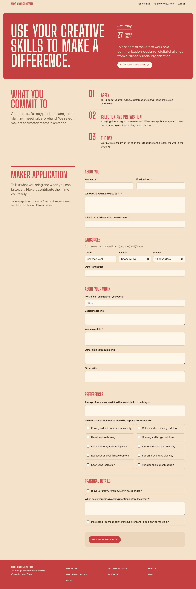
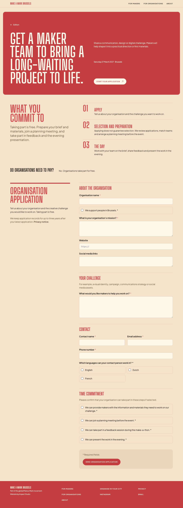

A page-to-page review · Build phase
Bring the organisation page into line.
The makers page has moved to a quieter, more editorial rhythm. The organisations page still carries the earlier hero and application introduction.
Choose the refinements to carry across. The organisation’s message and form fields stay specific to organisations; these proposals align the presentation. The payment line is already marked for removal from your note.


Your call
Which updates should carry over?
Each card shows the current difference and the proposed organisations treatment. Select any combination.
Next step
Send your selection
Queue one itemized request with the selected updates. The payment note removal will be included automatically.